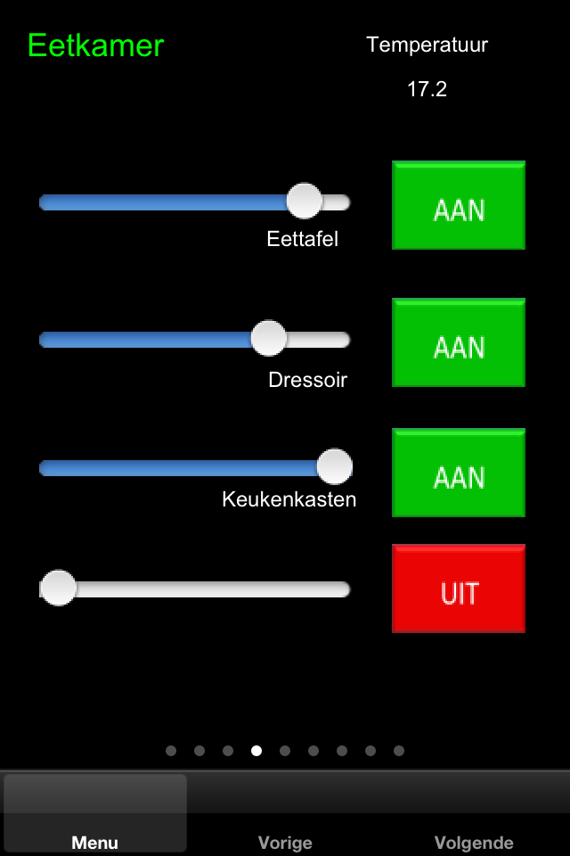
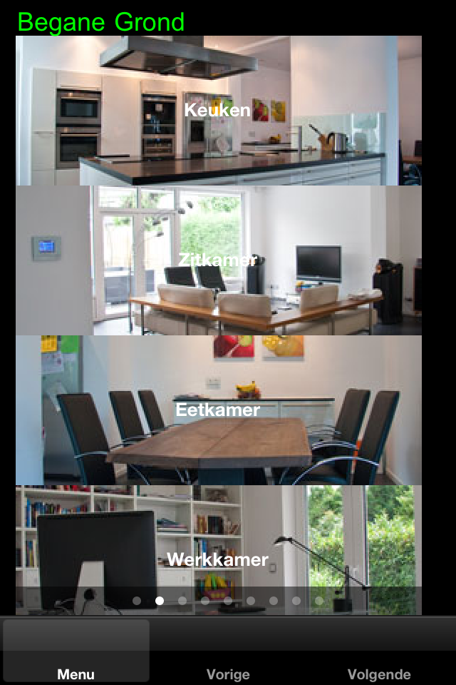
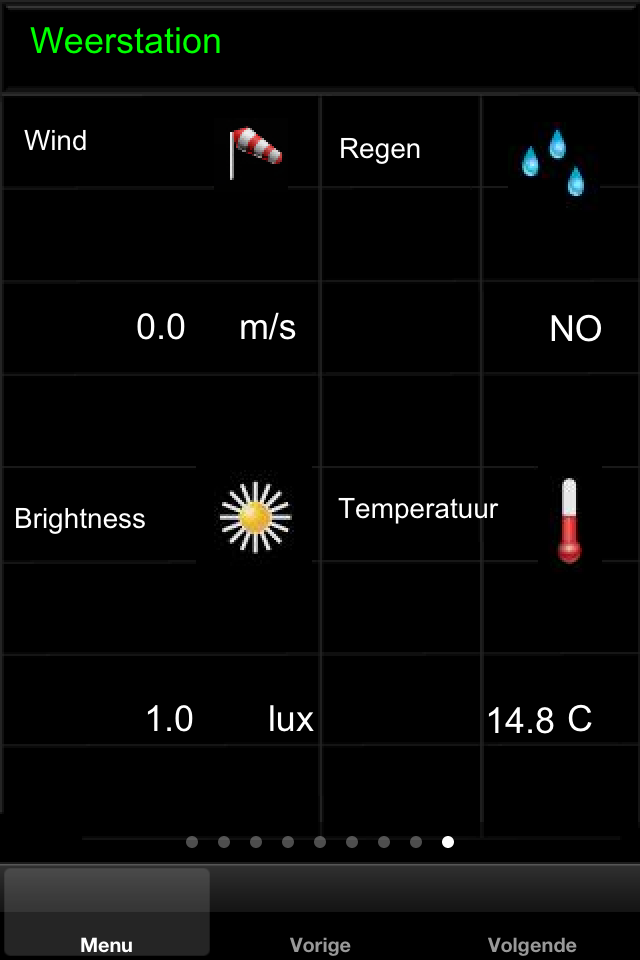
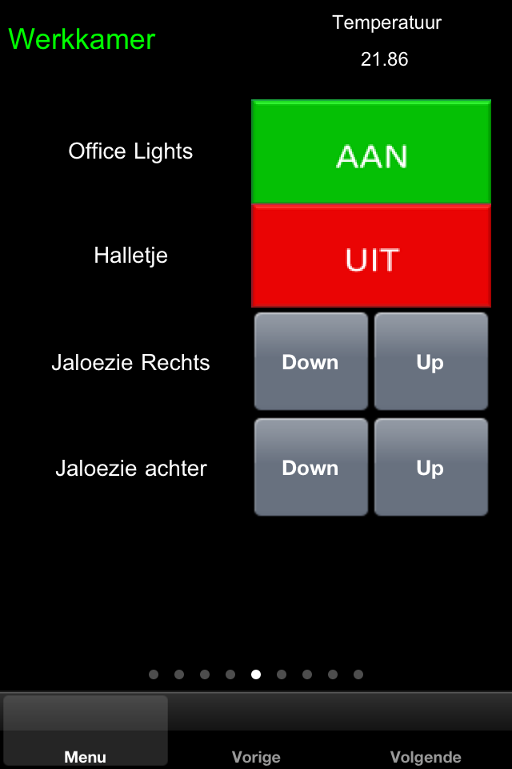

|
This page last changed on Sep 15, 2011 by rickcn.
Juha, All,
First and foremost thanks for this great tool! Although I am far from ready and still having lots of things to program and visualize, I am really motivated to get this going... so much I am loosing sleep over it, as I get better ideas every day that I want to try immediately.
For inspiration here are some panels I made. Hope that you like them.!Rooms ground floor ! !Weather station!



|
Geweldige App!
Proficiat, waarop draait ie?

Posted by icefluffy at Sep 15, 2011 20:47
|
|
Hoi Seth,
Deze Openremote app maakt gebruik van mijn Ubuntu server waarom de OR Controller 2.0 draait. Tevens draai ik op deze server ook EIBD als KNX IP Gateway/Tunnel verbonden met mijn lichtnet via een USB. Mijn huis heeft Busch-Jaeger Powernet.
Dus met deze app stuur ik mijn KNX domotica in het huis aan.
Mvg,
Rick
--------------------------------------------------------------------------
OR Controller 2.0 running on Ubuntu server, with EIBD KNX GW connected via USB to Busch-Jaeger Powernet
Posted by rickcn at Sep 16, 2011 00:24
|
|
Thank you for sharing your design and your enthusiasm. Looks good 
Posted by admin at Sep 16, 2011 00:28
|
|
Nice work!
I see so few people showing of the design of their openremote controller and I want to be inspired. Any other people willing to share their work?
I still need to get started.
Posted by daendekerk at Oct 03, 2011 22:07
|
|
{kind=link}
{kind=link}
{kind=link}
{kind=link}